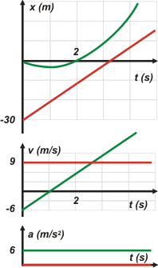

|
NO ME SALEN
PROBLEMAS RESUELTOS DE FÍSICA DEL CBC
(Movimiento uniformemente variado)
|
|

|
 |
3.14- Dos móviles A y B viajan por un camino
rectilíneo. Inicialmente A tiene aceleración nula,
velocidad 9 m/s y posición –30 m, mientras que
los valores correspondientes a B son 6 m/s2,
-6 m/s y cero. Indicar cuál de las siguientes afirmaciones
es verdadera: |
a) A los 3 s los móviles se encuentran.
b) Transcurridos 2 s están separados 5 m.
c) Por tener aceleración positiva, la velocidad
de B nunca cambia
de sentido.
d) Los móviles no se encuentran.
e) Ninguna de las anteriores. |
|
Si toda regla tiene una excepción, este ejercicio es la excepción de los esquemas. No es que sea imposible... es que en esta oportunidad creo que no va a aportar nada que no podamos resolver mejor de otro modo. Si estás en desacuerdo hacé uno vos, yo no me entero.
Tenemos dos movimientos, uno uniforme y el otro variado. La ecuación de velocidad del variado no hace falta que la escribamos (pero podemos hacerlo, no agrega ni quita nada en este ejercicio). |
| MRU |
x = xo + v ( t – to ) |
|
| MRUV |
x = xo + vo ( t – to ) + ½ a ( t – to )² |
|
|
|
Modelos |
Estas son las "generales". Para hallar las de nuestro problema habrá que reemplazar las constantes de las ecuaciones (to, xo, vo y a) por las "iniciales" de cada movimiento. |
|
|
| móvil A |
x = – 30 m + 9 m/s. t |
|
| móvil B |
x = – 6 m/s . t + 3 m/s² . t² |
|
|
|
Estas son las ecuaciones que describen TODO el fenómeno del movimiento que narra el enunciado. |
Para saber dónde y cuándo se encuentran (si se encuentran) podemos pedirles a ambas ecuaciones que hablen del mismo instante y de la misma posición, que llamaré posición de encuentro e instante de encuentro. Acá va: |
|
|
| en el encuentro |
xe = – 30 m + 9 m/s. te |
[1] |
| xe = – 6 m/s . te + 3 m/s² . te² |
[2] |
|
|
Estas, en cambio, son las ecuaciones especializadas para los instantes que a vos te interesan. |
Una forma fácil de resolver este sistema de dos ecuaciones con dos incógnitas es igualarlas:
– 30 m + 9 m/s. te = – 6 m/s . te + 3 m/s² . te²
Igualo a 0:
0 = 30 m – 15 m/s . te + 3 m/s² . te²
Y, como se trata de una ecuación de segundo grado completa, no hay más remedio que hacer uso de la formulita salvadora: |
|
|
|
|
|
|
donde a, b y c son los coeficientes de los términos cuadrático, lineal e independiente, respectivamente. Acá están:
a = 3 m/s² ; b = – 15 m/s ; c = 30 m
Oh... ¡sorpresa! Mientras estamos tratando de encontrar la solución nos topamos con una imposibilidad matemática... la raíz cuadrada de un número negativo... ¡no existe! Lo que hay dentro de la raíz tiene nombre propio, se llama discriminante:
b² – 4 a c = (225 – 360) m²/s² = – 135 m²/s²
La raíz de un discriminante negativo no tiene solución entre los números reales... Y eso quiere decir que los dos móviles no se encuentran en ningún instante real. (Eso fue un pequeño chascarrillo). |
|
|
| |
| |
d) Los móviles no se encuentran. |
|
|
|
|
Los ejercicios de respuesta múltiple nunca deben cerrarse al hallar una respuesta verdadera... hay que tomarse el trabajo de falsar las restantes. (La vida te da sorpresas). De modo que, teniendo las ecuaciones a la vista... habrá que responder una a una las demás opciones.
a) A los 3 s los móviles se encuentran.
xA3s = – 30 m + 9 m/s . 3 s = – 3 m
xB3s = – 6 m/s . 3 s + 3 m/s² . 9 s² = 9 m
Como ves, la opción a) es FALSA, a los 3 segundos están en posiciones diferentes.
b) Transcurridos 2 s están separados 5 m.
No aclara transcurridos desde cuándo. Supongamos que es transcurridos desde el instante anterior, o sea 2 s. Llegamos, entonces, al instante 5 s.
xA5s = – 30 m + 9 m/s . 5 s = 15 m
xB5s = – 6 m/s . 5 s + 3 m/s² . 25 s² = 45 m
Y la opción b) también es FALSA, a los 5 s están distanciados 30 m. Si consideraras que se trataba del instane 2 s (transcurridos desde el inicio), también resultaba FALSA, porque ahí se llevan 12 m. Las restantes falsalas vos, que son muy pavas.
|
|
|
| |
|
|
|  |
Te hice los gráficos en escala para que puedas cerciorarte de cómo viene la cosa.
El móvil A es el rojo y el B, el verde.
Como siempre, están hechos en tándem: encolumnados, con una misma escala de tiempo y en el orden correcto.
Tenés varias cosas para observar: que no se encontraban, que las posiciones que les calculamos coinciden con lo graficado, que la inclinación de las curvas es la correcta, que el instante en que tienen la misma velocidad coincide con la misma inclinación en el gráfico de posiciones.... etcétera, etcétera. |
|
|
|
| |
|
|
Yo antes era muy indeciso, ahora ya no estoy tan seguro.
DESAFIO 1: ¿Cómo harías para saber en qué momento los dos móviles se hallan más próximos?
DESAFIO 2: Trabajando con el discriminante podés lograr lo siguiente: modificá un dato para el móvil A, para que los móviles se encuentren en una única oportunidad.
|
|
 |
| Algunos derechos reservados.
Se permite su reproducción citando la fuente (se aclara que por "fuente" se entiende al autor y al sitio, www.neuro.qi.fcen.uba.ar/ricuti, no a la fuente de Trevi ni a ninguna otra que largue agua). Última actualización jun-08. Buenos Aires, Argentina. |
|
|
| |
|